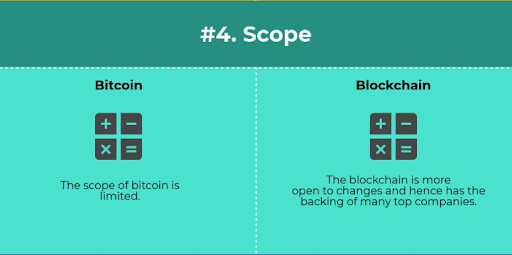
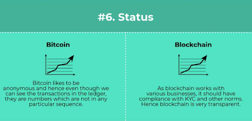
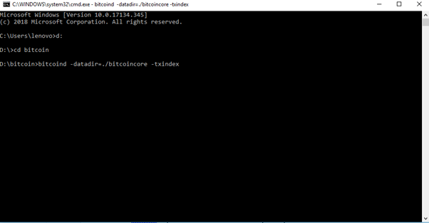

Whenever we talk about bitcoin and blockchain, people generally think they are the same because bitcoin was the first ever application of blockchain. People usually mistake bitcoin vs blockchain.





One of the key differences between bitcoin and blockchain is the adaptability. When we look at bitcoin, we look at something that is rigid and concentrates on cross-border transactions. While blockchain first started out as a ledger of the bitcoin currency, but it began to improve and slowly started catering to other industries as well. It has made continuous improvement in technology and now blockchain is the hottest thing running in the market right now.
Bitcoin is a crypto-currency that is used to reduce the transaction charges and transaction time of cross-border transactions. The blockchain is a distributed ledger that enables peer-to-peer transaction in one of the safest environments. Transactions done through blockchain are made public so that it can be transparent.
Bitcoin is a little bit closed system and it very much likes anonymity. Even when we find the transactions in the ledger, bitcoin vs blockchain are recorded in numeric codes that people can’t understand and that is why it is unable to move forward. On the other hand, blockchain has been working with various industries and hence it should comply with the rules and norms of the companies like the anti-money laundering, knowing your customer etc. So, it shows all the transactions clearly and the public has full access to the ledger thus companies trust more on the blockchain.
Once you've installed a Bitcoin wallet on your computer or mobile phone, it will generate your first Bitcoin address and you can create more whenever you need one. You can disclose your addresses to your friends so that they can pay you or vice versa. In fact, this is pretty similar to how email works, except that Bitcoin addresses should be used only once.
The blockchain is a shared public ledger on which the entire Bitcoin network relies. All confirmed transactions are included in the blockchain. It allows Bitcoin wallets to calculate their spendable balance so that new transactions can be verified thereby ensuring they're actually owned by the spender. The integrity and the chronological order of the blockchain are enforced with Cryptography.
A transaction is a transfer of value between Bitcoin wallets that gets included in the blockchain. Bitcoin wallets keep a secret piece of data called a private key or seed, which is used to sign transactions, providing a mathematical proof that they have come from the owner of the wallet. The signature also prevents the transaction from being altered by anybody once it has been issued. All transactions are broadcast to the network and usually begin to be confirmed within 10-20 minutes, through a process called mining.
Mining is a distributed consensus system that is used to confirm pending transactions by including them in the block chain. It enforces a chronological order in the blockchain, protects the neutrality of the network, and allows different computers to agree on the state of the system. To be confirmed, transactions must be packed in a block that fits very strict cryptographic rules that will be verified by the network. These rules prevent previous blocks from being modified because doing so would invalidate all the subsequent blocks. Mining also creates the equivalent of a competitive lottery that prevents any individual from easily adding new blocks consecutively to the blockchain. In this way, no group or individuals can control what is included in the block chain or replace parts of the blockchain to roll back their own spends.
To understand blockchain technology, you have to understand these two cryptographic concepts : -
.A hashing algorithm converts a string of any size into a string of predefined size (e.g. 256 bytes). It is one-way, meaning when provided with the hash, no can deduce the original string (this is true only if the hash size is significantly big - 256 or 512 bytes). Bitcoin uses SHA256 hashing algorithm and uses for two purposes -

A.) Hashing the previous block and storing that hash in the current block, creating a chain of blocks and hashing the transactions and storing them in the Merkel Tree (used for ease of verification of transactions).
B.It uses SHA256 for the proof of work consensus mechanism. This requires mining of blocks, which means finding a value (nonce), such that the hash (SHA256) of the block plus the nonce will be less than a prespecified number called target. Smaller the target, more difficult it is to mine the block.The private key consists of alphabetic numeric characters that gives a user access and control over their funds to their corresponding cryptocurrency address. The private key is used to sign transactions that allow the user to spend their funds
Bitcoin uses digital signatures for user authorisation. Each node generates a public-private key pair. It uses the public key as its network address and the private key to sign blocks/transactions. To check if the node/user has authorised any transaction/block, you have to verify the digital signature using the node’s public key. It is not possible to deduce the private key from the public key, hence this node-alias mechanism is secure. Bitcoin uses ECDSA encryption.

Proof-of-Work, or PoW, is the original consensus algorithm in a Blockchain network.
In Blockchain, this algorithm is used to confirm transactions and produce new blocks to the chain. With PoW, miners compete against each other to complete transactions on the network and get rewarded.
In a network users send each other digital tokens.A decentralized ledger gathers all the transactions into blocks. However, care should be taken to confirm the transactions and arrange blocks.
his responsibility bears on special nodes called miners, and a process is called mining.
The main working principles are a complicated mathematical puzzle and a possibility to easily prove the solution.
It’s an issue that requires a lot of computational power to solve.
hash function, or how to find the input knowing the output.
integer factorization, in other words, how to present a number as a multiplication of two other numbers.
guided tour puzzle protocol. If the server suspects a DoS attack, it requires a calculation of hash functions, for some nodes in a defined order. In this case, it’s a ‘how to find a chain of hash function values’ problem.
The answer to the PoW problem or mathematical equation is called hash.
As the network is growing, it is facing more and more difficulties. The algorithms need more and more hash power to solve. So, the complexity of the task is a sensitive issue.
Miners solve the puzzle, form the new block and confirm the transactions.How complex a puzzle is depends on the number of users, the current power and the network load. The hash of each block contains the hash of the previous block, which increases security and prevents any block violation.

If a miner manages to solve the puzzle, the new block is formed. The transactions are placed in this block and considered confirmed

Steps to create public blockchain bitcoin core.
Step-1: first you need to download bitcoin core from https://bitcoin.org/en/downloadt

And download the version as per your requirement.

And accept all the terms and license of the package
C:\Program Files\bitcoin\daemon

You can set path from program files, you need to open bitcoin folder ,open daemon folder and copy the path and paste it in the system environment variable.


You need to save this file as bitcoin.configure.


Bitcoind –datadir=./bitcoincore –txindex



Bitcoin-cli –datadir=./bitcoincore getblockchaininfo


All the Block which is created is saved in the folder.